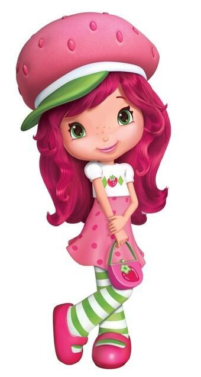
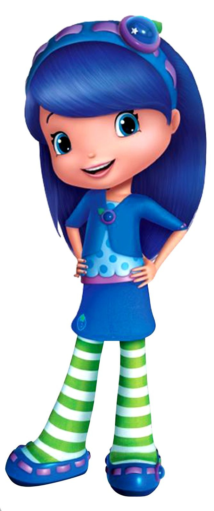

Sobre
A Moranguinho (Strawberry Shortcake no original em inglês) é uma personagem fictícia criada nos Estados Unidos em 1977 pela ilustradora Muriel Fahrion para a empresa American Greetings. Ela foi inicialmente concebida como uma imagem decorativa em cartões de felicitação, mas seu sucesso logo a transformou em uma franquia que inclui brinquedos, séries de televisão, filmes, roupas e outros produtos.
Missão
A missão do desenho da Moranguinho é entreter e educar as crianças enquanto promove valores como amizade, bondade, cooperação e criatividade. As aventuras da personagem e seus amigos em Morango Doce são desenvolvidas para ensinar lições importantes.
Visão
A visão do desenho da Moranguinho é criar um mundo mágico e inspirador onde as crianças possam aprender valores essenciais enquanto se divertem com histórias envolventes e coloridas.
Valores
Os valores do desenho Moranguinho estão centrados em princípios positivos e ensinamentos que promovem o desenvolvimento emocional e social das crianças.
Cidade
Personagens

